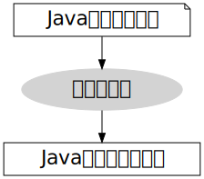
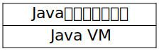
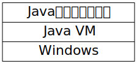
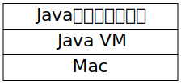
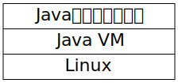
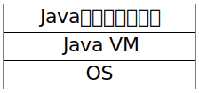
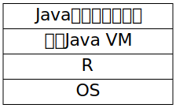

Rで書くJava VM

Java使ったことある人？
Java VMとは
Java virtual machine
Java仮想マシン
Javaのソースコードは
Javaクラスファイルにコンパイルされる

これが
こうなる
00000000: cafe babe 0000 0037 001d 0a00 0600 0f09 .......7........
00000010: 0010 0011 0800 120a 0013 0014 0700 1507 ................
00000020: 0016 0100 063c 696e 6974 3e01 0003 2829 .....<init>...()
00000030: 5601 0004 436f 6465 0100 0f4c 696e 654e V...Code...LineN
00000040: 756d 6265 7254 6162 6c65 0100 046d 6169 umberTable...mai
00000050: 6e01 0016 285b 4c6a 6176 612f 6c61 6e67 n...([Ljava/lang
00000060: 2f53 7472 696e 673b 2956 0100 0a53 6f75 /String;)V...Sou
00000070: 7263 6546 696c 6501 000a 4865 6c6c 6f2e rceFile...Hello.
00000080: 6a61 7661 0c00 0700 0807 0017 0c00 1800 java............
00000090: 1901 000d 4865 6c6c 6f2c 2077 6f72 6c64 ....Hello, world
000000a0: 2e07 001a 0c00 1b00 1c01 0005 4865 6c6c ............Hell
000000b0: 6f01 0010 6a61 7661 2f6c 616e 672f 4f62 o...java/lang/Ob
000000c0: 6a65 6374 0100 106a 6176 612f 6c61 6e67 ject...java/lang
000000d0: 2f53 7973 7465 6d01 0003 6f75 7401 0015 /System...out...
000000e0: 4c6a 6176 612f 696f 2f50 7269 6e74 5374 Ljava/io/PrintSt
000000f0: 7265 616d 3b01 0013 6a61 7661 2f69 6f2f ream;...java/io/
00000100: 5072 696e 7453 7472 6561 6d01 0007 7072 PrintStream...pr
00000110: 696e 746c 6e01 0015 284c 6a61 7661 2f6c intln...(Ljava/l
00000120: 616e 672f 5374 7269 6e67 3b29 5600 2100 ang/String;)V.!.
00000130: 0500 0600 0000 0000 0200 0100 0700 0800 ................
00000140: 0100 0900 0000 1d00 0100 0100 0000 052a ...............*
00000150: b700 01b1 0000 0001 000a 0000 0006 0001 ................
00000160: 0000 0001 0009 000b 000c 0001 0009 0000 ................
00000170: 0025 0002 0001 0000 0009 b200 0212 03b6 .%..............
00000180: 0004 b100 0000 0100 0a00 0000 0a00 0200 ................
00000190: 0000 0300 0800 0400 0100 0d00 0000 0200 ................
000001a0: 0e .JavaクラスファイルはJava VM上で実行される

Java VMがあればJavaはどこでも動く

Java VMがあればJavaはどこでも動く

Java VMがあればJavaはどこでも動く

ある日見かけたツイート
本日の「PHP で JVM を実装して Hello World を出力するまで」の登壇資料です。PHP だけには限らず、 JS や Go など、他の言語でも JVM は実装可能なので、ぜひ試してみてくださいね！🙆 #builderscon https://t.co/sUgQNIAzi4
— めもりー🐱🐹 (@m3m0r7) August 31, 2019
「PHPでJVMを実装して
Hello Worldを出力」
PHPは動的型付けの汎用スクリプト言語
Rも動的型付けの汎用スクリプト言語
じゃあRでもできるんじゃね？
これを

こうする

やってみた。
jvmrr
インストール
あそびかた
Javaのコードを
コンパイルしたら
Rで読み込んで
実行できる
Fizz Buzzも
コンパイルしたら
R上で動く
あなたとjvmrr,
今すぐダウンロー
ド
使ったパッケージ

似たような関数のリストを作りたいとき
purrr::mapで一気に生成できる

Javaバイトコードを書くためのDSLを実装
これを
dequer
データ構造 (queue, stack, double ended queue)
Java VMはスタックマシンなので素直にstackを使う

テストを書くと結果的により速く実装できる
まとめ
いつも言ってるけど
Rは統計専用の言語ではない。
RでJava VMを実装できる。
Rで何かを作ろうとしないときに
それを制限しているのは多分言語ではなく
あなたの心なのだ。
Rで何を書いても良いよ。
Rは楽しい言語
- 関数プログラミング
- NSE
- メタプログラミング
- 便利なパッケージ